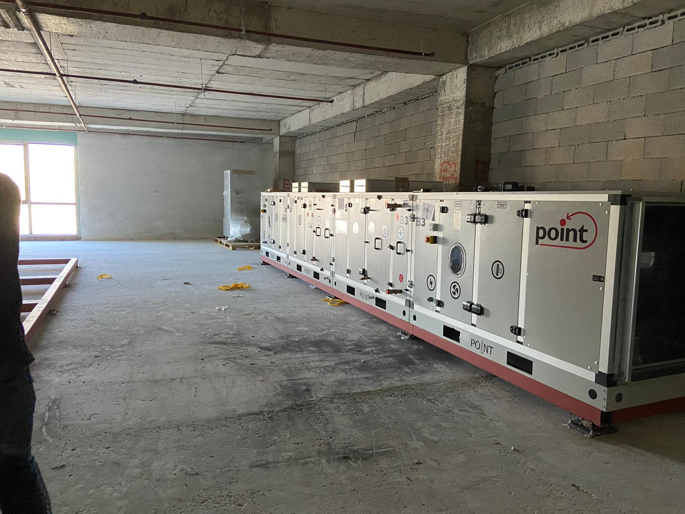

MAG MEKANİK TESİSAT
Güvenilir, Planlı ve Uzun Ömürlü Mekanik Tesisat Çözümleri
Yangın tesisatı, havalandırma, sıhhi tesisat ve mekanik altyapı projelerinde keşiften uygulamaya kadar tek noktadan hizmet sunuyoruz.


MAGPlanlı uygulama
güvenli teslim
güvenli teslim
KURUMSAL YAKLAŞIM
İhtiyacınızı yalnızca karşılamıyor, doğru teknik çözümü kuruyoruz.
MAG Mekanik; ticari, endüstriyel ve konut projelerinde mekanik tesisat sistemlerini anahtar teslim yaklaşımla planlayan ve uygulayan teknik bir ekiptir.
Keşif, metraj, malzeme planlaması, montaj, test ve devreye alma süreçlerini tek ekip disipliniyle yönetir; işletmenize uzun vadeli değer sağlayan sistemler kurarız.
UZMANLIK ALANLARIMIZ
Mekanik tesisatın her aşamasında profesyonel çözümler
Projeye uygun malzeme, doğru uygulama ve koordineli saha yönetimiyle yapılarınızın teknik altyapısını güvenle kuruyoruz.
 01
01
Yangın Tesisatı
Sprinkler, hidrant ve yangın pompa sistemleri
 02
02
Havalandırma Sistemleri
Hava kanalı, fan ve klima santrali uygulamaları
 03
03
Sıhhi Tesisat
Temiz su, atık su ve dağıtım hatları
04
Pompa Dairesi Kurulumu
Pompa grupları, kollektör ve otomasyon
 05
05
Endüstriyel Altyapı
Fabrika ve üretim tesisi uygulamaları
 06
06
Keşif ve Danışmanlık
Teknik metraj ve uygulama planlaması
NEDEN MAG MEKANİK?
Sahada detaylara hakim, süreçte şeffaf, teslimde güvenilir.
Her projeyi kendi koşulları içinde ele alır; uygulama kalitesini, iş programını ve uzun vadeli işletme verimliliğini birlikte gözetiriz.
Projenizi Bizimle PaylaşınPlanlı Uygulama
Saha süreçlerini iş programına uygun ve kontrollü şekilde ilerletiriz.
Teknik Uyum
Sistemleri standartlara, projeye ve bakım kolaylığına göre şekillendiririz.
Tek Ekip Yönetimi
Keşiften devreye almaya tüm süreçleri koordineli biçimde yürütürüz.
SAHADAN GÖRÜNTÜLER
Uygulama kalitemizi projelerimiz anlatıyor.

ÇALIŞMA SÜRECİMİZ
Fikirden teslimata net ve kontrollü bir yol haritası
Keşif ve Analiz
Saha koşullarını ve proje ihtiyaçlarını doğru biçimde belirleriz.
Teknik Planlama
Uygun sistemi, malzemeleri ve iş programını detaylandırırız.
Uygulama
Montajı sahada düzenli, temiz ve kontrollü biçimde yürütürüz.
Test ve Teslim
Sistemleri test ederek güvenli biçimde devreye alırız.
YENİ PROJENİZ İÇİN
Teknik ihtiyaçlarınızı birlikte değerlendirelim.
Doğru keşif, net planlama ve güvenilir uygulama için ekibimizle iletişime geçin.